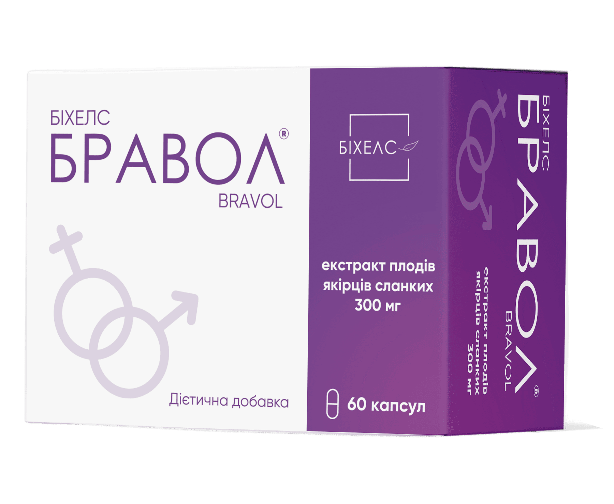
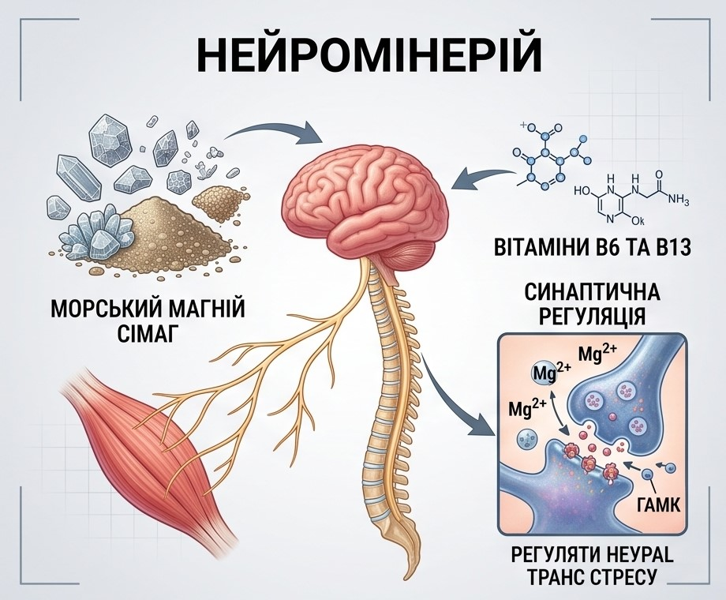

Бравол
Шугард–6 стражів. Гармонія в поєднанні, захищають на 6 етапах порушень вуглеводного обміну.

Бравол (капсули №60)
Дієтична добавка на основі високодозованого екстракту якірців сланких
Натуральний засіб — додаткове джерело фуростанолових сапонінів (переважно протодіосцину). Сприяє нормалізації еректильної функції, підвищенню рівня ендогенного тестостерону, підсиленню лібідо та покращенню репродуктивної функції.

Склад та активні речовини
1 капсула містить: екстракт плодів якірців сланких (Tribulus terrestris L.) порошкоподібний — 300 мг (містить 90% фуростанолових сапонінів); допоміжні речовини: наповнювач мальтодекстрин, желатинова оболонка.
Властивості компонентів
- Екстракт якірців сланких (Tribulus terrestris): біологічно активні речовини (протодіосцин, стерини) стимулюють вироблення власного тестостерону, підсилюють вивільнення оксиду азоту у печеристих тілах, покращують ерекцію, підвищують лібідо та оптимізують показники сперматогенезу. Також виявляє протективну дію щодо утворення сечових конкрементів.
Рекомендації до застосування
- Нормалізація еректильної функції;
- Посилення лібідо, сили та тривалості ерекції;
- Комплексне лікування статевих розладів у чоловіків та жінок;
- Покращення репродуктивної функції у чоловіків (при ідіопатичній олігоастенотератоспермії).
Спосіб застосування та дози
Вживати дорослим по 1 капсулі 3 рази на добу після прийому їжі, запиваючи склянкою (200 мл) питної води. Рекомендований термін споживання — не менше 3 місяців. Надалі можливість повторного курсу узгоджується з лікарем.
Протипоказання
Підвищена індивідуальна чутливість до складових компонентів, вагітність та період лактації, дитячий вік.